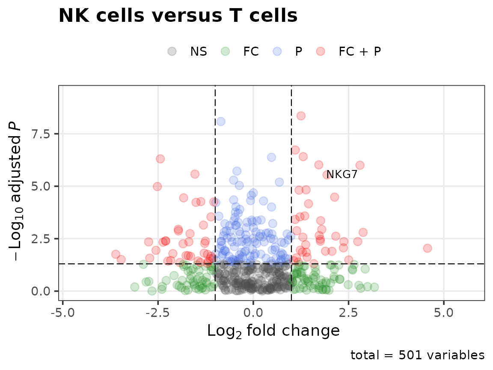
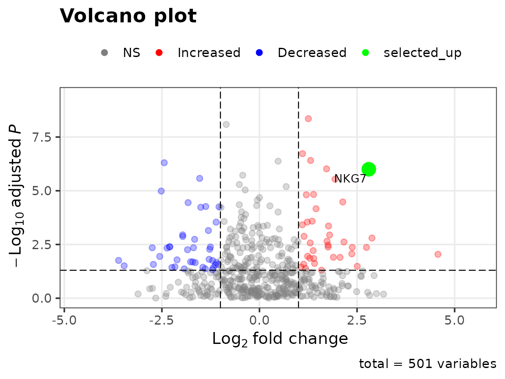
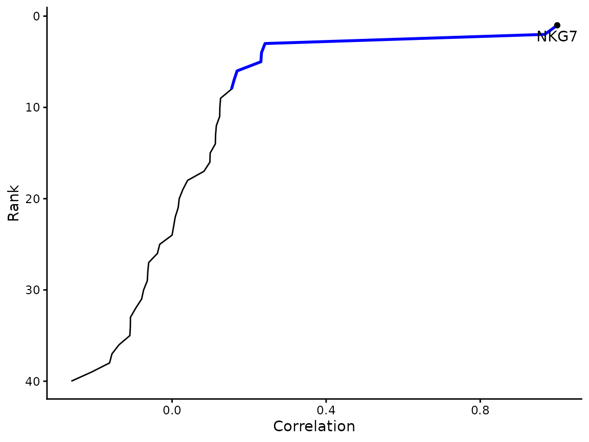

usefulfunctions collects the helpers I use repeatedly in
single-cell, bulk RNA-seq and cancer-genomics analyses. This vignette
walks through the functions that run without optional Bioconductor
dependencies, using simulated data. The functions that need Seurat,
clusterProfiler, biomaRt or TCGAbiolinks are described at the end.
Volcano plots
volcano_plot() takes a differential-expression table
with a log fold change and an adjusted p-value, colours points by which
cutoffs they pass, and labels genes.
set.seed(1)
de <- data.frame(
logFC = rnorm(500, sd = 1.2),
FDR = runif(500)^3,
row.names = paste0("gene", 1:500)
)
de["NKG7", ] <- c(2.8, 1e-6)
volcano_plot(de, fc_cutoff = 1, label_genes = "NKG7", title = "NK cells versus T cells")
Highlighting a gene of interest uses the point helpers, which return one value per row:
volcano_plot(
de,
fc_cutoff = 1,
label_genes = "NKG7",
point_colours = colour_volcano_points(de, highlight.selected = TRUE, highlight.genes = "NKG7",
logFC.cutoff = 1),
alpha = alpha_volcano_points(de, "NKG7", baseline.alpha = 0.3),
point_size = size_volcano_points(de, "NKG7", baseline.size = 2, highlight.size = 5)
)
Gene-gene correlation in single cells
sc_correlation() correlates one gene against every other
gene across cells and reports the correlation, p-value and
Benjamini-Hochberg FDR, sorted from most to least correlated.
expr <- matrix(rnorm(40 * 60), nrow = 40,
dimnames = list(c("NKG7", paste0("g", 1:39)), paste0("cell", 1:60)))
expr["g1", ] <- expr["NKG7", ] + rnorm(60, sd = 0.3) # a co-expressed gene
cor_df <- sc_correlation(expr, goi = "NKG7", remove.quantile = 0, output.tables = NULL)
head(cor_df, 4)
#> GeneID Cor.val P.val FDR
#> 1 NKG7 1.0000000 0.000000e+00 0.000000e+00
#> 2 g1 0.9676582 2.187029e-36 4.374059e-35
#> 3 g5 0.2413651 6.319048e-02 5.089608e-01
#> 4 g35 0.2322416 7.416485e-02 5.089608e-01
plots <- plot_correlation(cor_df, output.dir = NULL, goi = "NKG7", top.n.val = 8)
plots$ranking
Splitting samples by expression
stratify_by_expression() returns the samples in the top
and bottom quantile for a gene, or for a multi-gene signature scored as
the mean z-score. It is the stratification step used by
tcga_survival().
Small utilities
make_transparent(c("red", "navy"), percent = c(20, 60))
#> [1] "#FF0000CC" "#00008066"
get_batlow(5)
#> [1] "#001959" "#215F61" "#818231" "#F19D6B" "#F9CCF9"
moving_average(c(1, 3, 2, 8, 5, NA, 4), n = 3, centered = TRUE)
#> [1] 2.000000 2.000000 4.333333 5.000000 6.500000 4.500000 4.000000
standardize(rbind(c(1, 2, 3, 40), c(5, 5, 5, 5)))
#> [,1] [,2] [,3] [,4]
#> [1,] -1.011736 -0.3372454 0.3372454 25.2934
#> [2,] 0.000000 0.0000000 0.0000000 0.0000standardize() centres each row by its median and scales
by its MAD, and leaves constant rows at zero instead of producing
NaN.
Functions with optional dependencies
These check for their packages when called and give a clear message if one is missing.
| Function | Needs | What it does |
|---|---|---|
go_enrichment() |
clusterProfiler, org.Hs.eg.db or org.Mm.eg.db | GO over-representation of top-ranked genes, as a plot or
enrichResult
|
convert_mouse_to_human(),
convert_human_to_mouse()
|
biomaRt, or the JAX report with use.jax = TRUE
|
Ortholog symbol conversion |
umap_optimise() |
Seurat | Sweeps min.dist and n.neighbors and saves
a PDF per setting |
correlation_heatmaps() |
Seurat | Heatmaps of the most positively and negatively correlated genes |
basic_heatmap() |
gplots | Clustered log2 heatmap |
dendrogram_samples() |
factoextra (and ape for phylogeny layouts) | Sample dendrogram |
tcga_survival(),
download_tcga_rnaseq()
|
TCGAbiolinks | TCGA overall survival by gene or signature expression |
Renamed functions
Earlier versions used dot.case names (makeTransparent(),
GO.function(), TCGA.OS(), …). They still work,
warn once per session, and forward to the snake_case function. See
?legacy_aliases for the full table.